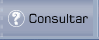
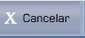
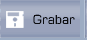
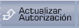

Crear Clase de Zona
Clases de Zona:
Seleccione la clase de zona activa o inactiva, dando clic en el ícono (), el mismo que despliega la lista de clases de zonas, como se muestra en 1.14. Para seleccionar una clase de zona dé clic en el vínculo Select. En el caso que desee crear una Clase de Zona, digite el nuevo código.
Una vez que seleccione o digite de Zona, se despliega la pantalla donde podrá establecer o modificar la estructura (niveles) que tiene de Zona seleccionada, como se muestra en 1.15.

Figura 1. Ingreso o Actualización de Clases de Zona.
Descripción:
Despliega la descripción de de Zona seleccionada, si ya existe; en el caso que sea un ingreso nuevo se deberá digitar esta información.
Estatus:
Se define el estado, según sea el caso (Activo o Inactivo).
Estructura de :
Despliega la estructura de la zona, este campo en caso de consulta permanece protegido; en caso de ingreso, debe tenerse en cuenta que la suma de los valores introducidos en este campo no puede ser mayor de 8. Al definir de obliga a ingresar los niveles según la estructura de la zona ingresada.
Nombre del Nivel 1…….Nivel 4:
En caso de consulta, podrá actualizar el nombre de los niveles que se encuentren activos. Si se trata de un ingreso, digite la descripción de cada nivel; estos campos se activarán dependiendo de lo que haya definido en la estructura de la zona.
Validar Zonas:
Seleccione una de las siguientes dos opciones:
- Marque el casillero SI, para que el programa valide todas las zonas definidas en las Cuentas de Auxiliar de los Tipos que utilizan de Zona seleccionada. En el caso de que esto no sea así, emite el correspondiente mensaje de error impidiendo la actualización.
- Marque el casillero NO, si no se desea efectuar la validación de la existencia de las Zonas que se asignan a las cuentas de Auxiliar. Con este valor sólo se valida que la estructura de sea correcta.
Presione el botón Grabar para registrar las actualizaciones.
BOTONES




Created with the Personal Edition of HelpNDoc: Easily create Qt Help files